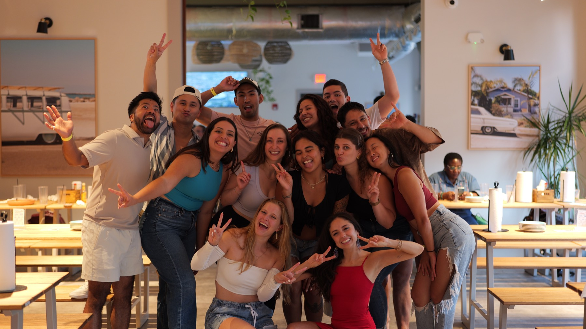
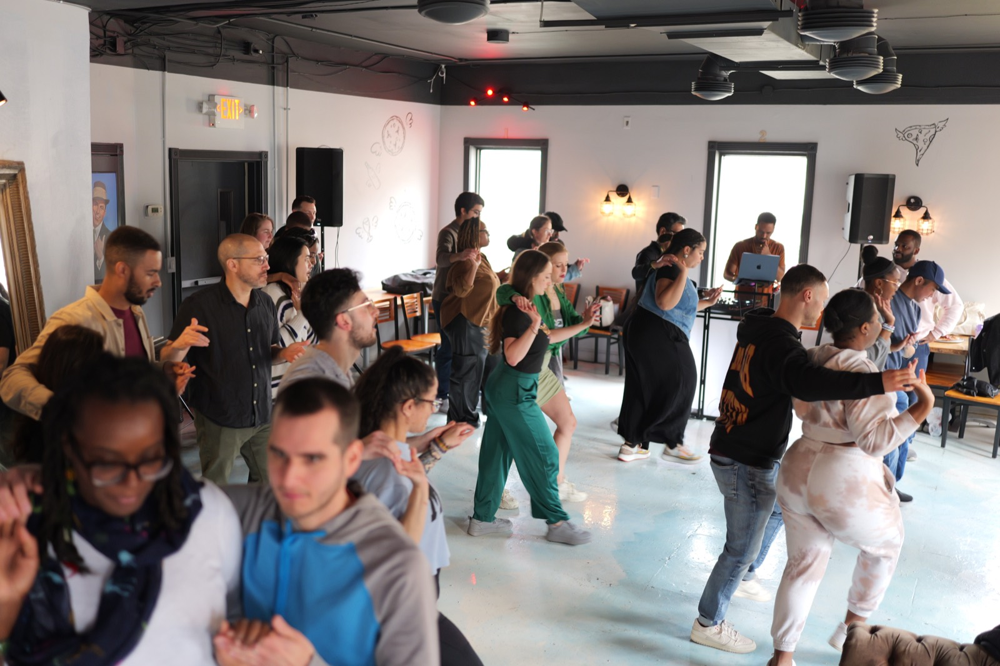
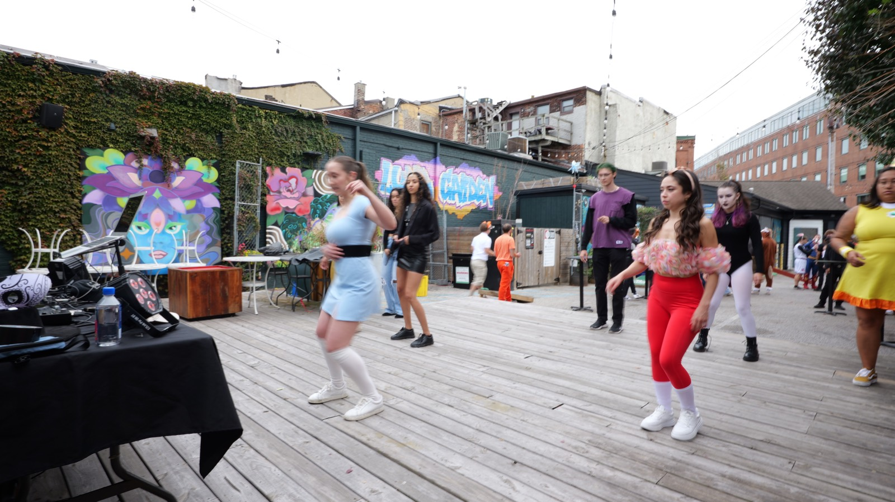
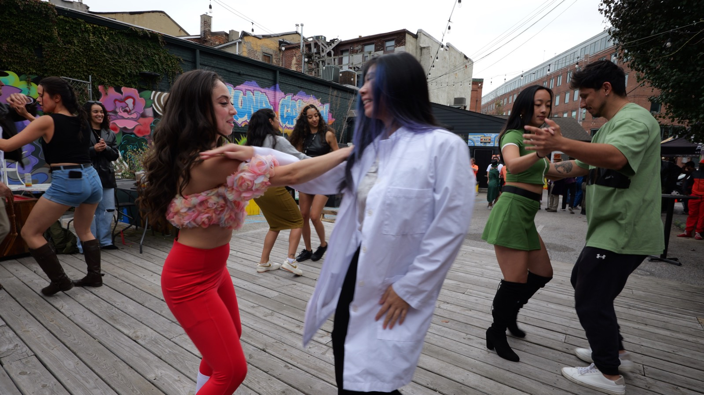
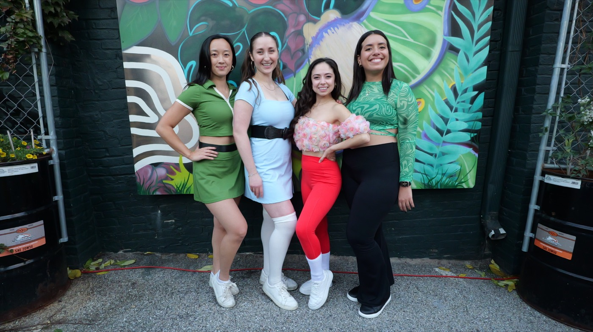
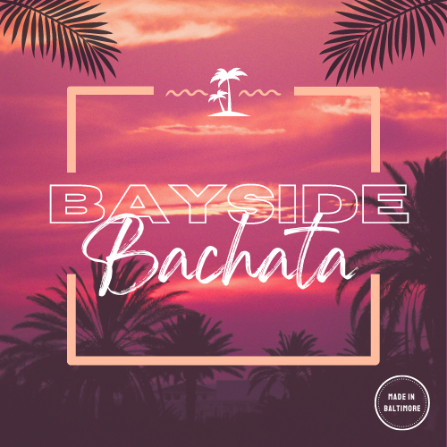

What We Host
Baltimore, Maryland
Dance nights with real community behind them.
Bayside Bachata hosts salsa and bachata classes, socials, and Latin dance events around Baltimore with a warm, welcoming energy that keeps new and returning dancers connected.
- Beginner-friendly classes
- Bachata and salsa socials
- Made in Baltimore

Who It Is For
New dancers, regular socials, and everyone in between
Where To Watch
Instagram for live flyers, updates, and event details
Classes
Structured enough to learn, relaxed enough to keep showing up.
Classes are built to help dancers get comfortable with timing, partner connection, and social floor confidence without making the experience feel rigid.
Beginner Friendly
New dancers can walk in, learn the basics, and leave with a better sense of rhythm and confidence.
Social Floor Ready
The focus stays practical so what you learn in class translates directly into the social.
Connection First
Musicality, partner awareness, and clean fundamentals shape the overall feel of the dancing.

Events
Latest events and updates are posted on Instagram.
For current event dates, venue details, and new announcements, check Bayside Bachata on Instagram.



Connect
Follow along for the next class, social, or special night.
The fastest way to stay current is through Bayside Bachata's Instagram page, where new flyers and event updates are posted first.
